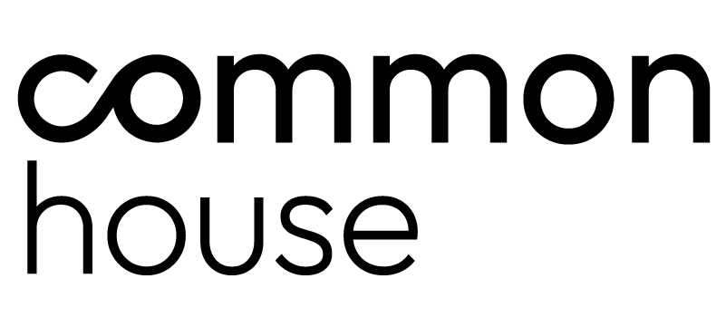
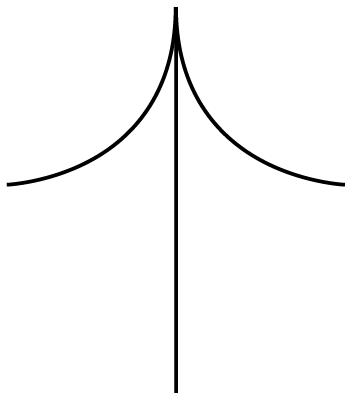
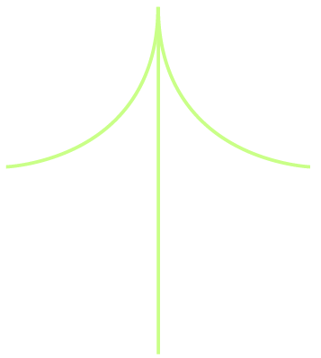

Que sirva de base para identificar cuáles tienen más encaje con tu operación, tu cliente y tu momento de crecimiento.
A partir de ahí, profundizar uno o dos antes de pensar en piloto.
Cada modelo describe una forma distinta de circular un envase, un producto o un objeto. Son complementarios: una misma tienda puede tener varios.
Modelo tipo YENXA, startup española con tecnología probada presente en el Global Zero Waste Forum 2025. Drop-off del aceite, procesamiento centralizado o por cluster, reventa como detergente refill bajo marca Kinko.
Comprensible para cualquier cliente: lo que entregás vuelve a tu casa como otro producto.
Incorpora tecnología circular probada a la operación de Kinko, en un categoría tradicional.
Genera relato fuerte, ancla la identidad de marca propia.
Los cinco modelos no aplican uniformemente. Se materializan en distintos formatos de tienda de la red Kinko.
